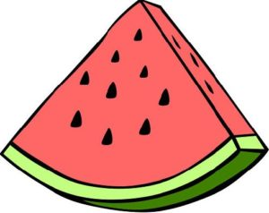
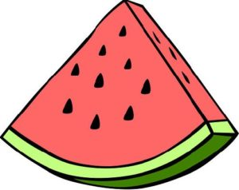

STRONA GŁÓWNA |
GRAFIKA RASTROWA |
GRAFIKA WEKTOROWA |
GRAFIKA TRÓJWYMIAROWA |
KOMPEDIUM |
|---|
Do najpopularniejszych rozszerzeń plików grafiki wektorowej należą:
SVG (.svg) – format oparty na XML, powszechnie używany w sieci, idealny do grafiki internetowej.
AI (.ai) – format Adobe Illustrator, wykorzystywany w profesjonalnym projektowaniu graficznym.
EPS (.eps) – format przenośny, często używany w druku i w profesjonalnej grafice.
PDF (.pdf) – format uniwersalny, wspiera grafikę wektorową i rastrową, używany w publikacjach.
Co to jest?
Grafika wektorowa to obraz stworzony za pomocą matematycznych równań,
które definiują linie, kształty i kolory.
Jakie są zalety i wady grafiki wektorowej?
Zalety grafiki wektorowej:
- Niezależność od rozdzielczości – obrazy można dowolnie skalować bez utraty jakości.
- Małe rozmiary plików przy prostych grafikach.
- Łatwa edycja kształtów, linii i kolorów.
- Wady grafiki wektorowej:
- Trudna do zastosowania w przypadku realistycznych obrazów (np. zdjęć).
- Może być ograniczona w tworzeniu bardzo szczegółowych tekstur i gradientów.
- Mniej precyzyjna w odwzorowywaniu drobnych detali w porównaniu do grafiki rastrowej.
Jakie jest zastosowanie grafiki wektorowej?
Grafika wektorowa jest wykorzystywana głównie w projektowaniu logo,
ikon, plakatów, ilustracji, infografik, animacji 2D, projektach
typograficznych oraz w tworzeniu wizualizacji i schematów. Idealna
do tworzenia grafik, które muszą być skalowane, jak na przykład reklamy,
ulotki czy projekty na różne media.
 
